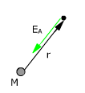
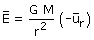

Campo gravitatorio creado por una masa puntual


M
Masa creadora del campo
r
Vector de posición (Desde la masa hasta el punto)
Módulo del vector de posición
ur
Vector unitario correspondiente al de posición